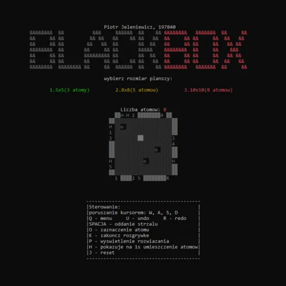
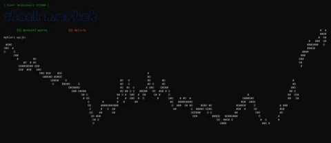
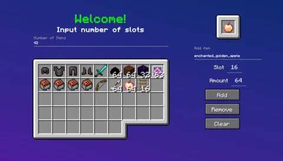
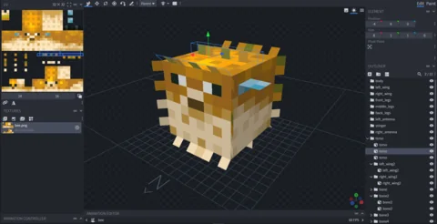
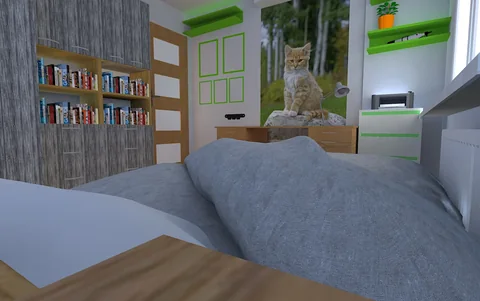
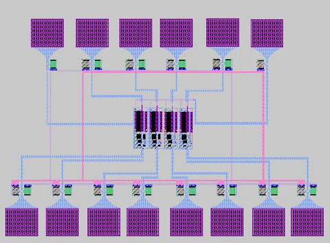

My Projects
What I Build
Automation tools, desktop applications and interfaces for technical systems. My work covers requirements, data flows, module integration and testing. I develop projects around practical needs and user feedback.





Core Strengths
From Circuits to Code




My laboratory experience covers measurements, circuit simulation and PCB design using LTspice, Micro-Cap, EAGLE, KiCad and Vivado. I am interested in systems that combine electronics and software.

I use Python and JavaScript for tooling, API integration and data processing. My C/C++ and Java experience includes projects and object-oriented programming coursework. I combine implementation, interface development and functional testing.


I work with Windows, Windows Server and virtual machines. I use Git, Linux and Docker in project workflows and AutoHotkey to automate everyday tasks.
Education & Experience
From Theory to Practice
2023 - present | expected graduation: 02.2027
Gdańsk University of TechnologyElectronics and TelecommunicationsStream: ElectronicsSpecialisation: Computer Electronic Systems
I am the lead software developer for the SeeSky radio telescope project in the SimLE student research club. I develop the frontend and backend of its operating interface, including an interactive sky visualisation. The next project stage covers hardware and SDR integration.
2024.09 - 2024.10
ASSECOTelecommunications and Media Division
- Prepared and configured a Windows Server 2019 environment for a certificate-handling solution.
- Developed a REST endpoint for request handling in a project involving Microsoft AD CS and DCOM communication.
- Created an environment setup guide and technical documentation for further integration work.
2019-2023
III High School in SopotPolytechnic profile (mathematics and IT)
The polytechnic profile gave me a strong foundation in mathematics and computer science. It was also where I began applying that knowledge by building my first IT projects.
My Projects
Things I Have Built
JobManager
In use and evolvingJobManager aggregates listings from multiple job portals, provides shared filters and AI-assisted offer research, and sends notifications. I develop it through regular use, integrating data collection, APIs and a user interface.
- Job listings from multiple portals in one application
- Result filtering and offer research with Gemini API
- Modular data-source handling and integrations
- Notifications for offers matching selected criteria


LabInc: Chemical Tycoon
Personal ProjectA Java incremental game about building up chemical-element production. The project combines an object model, economic simulation, game-state management and a Swing interface.
- Economy and production progression logic
- Game-state persistence and achievements
- Swing interface with production and market panels
- Producing and selling chemical elements

Password Manager
PrototypeA password-manager prototype for Windows and Linux, developed as a student team project. The application provides a credential vault and an interface for managing entries.
- Adding, editing and organising vault entries
- Team collaboration on a desktop application


Tools and Other Projects
More of My Work
Yapper
A Windows dictation application I use every day. Two push-to-talk channels, online and offline transcription engines, and automatic clipboard output support everyday text workflows.
Radio Telescope Control Panel
Frontend and backend for the SimLE SeeSky radio telescope. I lead software development, including the interactive sky visualisation. Hardware and SDR integration form the next stage.
Turf Matchmaking
In use and evolvingA Krunker lobby finder with configurable filters, live-data validation and retry handling. Other players also use the tool, and their feedback informs continued development.
BlackBox
Personal ProjectA C++ terminal logic game that locates hidden atoms by interpreting ray paths. The project includes board logic, ray simulation and user interaction.
Game Inventory Generator
A visual video-game inventory generator that builds a Minecraft-style inventory from a searchable item database, with configurable slots and quantities.
Florist Website
In developmentA website for a local florist - a real client project built by a small team.
Stock Market Analysis Tool
A C++ terminal application that parses stock-market data and draws bar charts directly in the console.
About Me
About Me
I am a final-semester Electronics and Telecommunications student at Gdańsk University of Technology, in the Electronics stream, specialising in Computer Electronic Systems. I develop applications and automation tools with a focus on API integration, data flows and module interaction. I want to continue combining software development with technical systems.
What keeps me busy right now:
- Engineering thesis: training DQN agents in Mario and ViZDoom, recording metrics and analysing experiments.
- SimLE / SeeSky: leading radio telescope software development, including frontend, backend and sky visualisation.
- Personal tools: JobManager, Yapper and Turf Matchmaking, improved through real use.
- Tutoring: high-school mathematics, using diagrams and analogies adapted to the pupil.
After hours you'll find me into geography, blending music, working on my fitness and diet at the gym, experimenting with AI audio-separation tools, or just getting started with architectural visualization in ComfyUI.
How I Work
How I Build with AI
From Requirements to Integration
- Define the problem, user and expected outcome.
- Break the system into modules, data and interfaces.
- Direct AI-assisted implementation and connect the components.
- Check usage scenarios, diagnose issues and improve the solution.
I use AI development tools for implementation and iterative application development. I define requirements, design module boundaries, connect interfaces and verify system behaviour in practice.
Examples and Next Steps
- JobManager: offer sources, research and notifications in one workflow.
- Yapper: a tool I use every day.
- SeeSky: radio telescope interface development and preparation for hardware integration.
- I want to develop in integration and automation, and over time in embedded systems and IoT with AI.